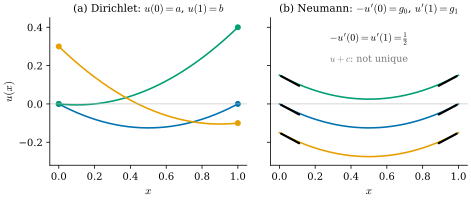
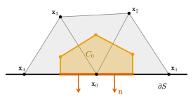
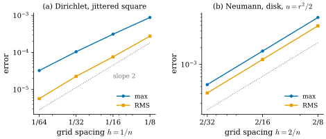

42.5 Boundary Conditions
Goals
- Dirichlet boundary condition과 Neumann boundary condition을 정의하고, 1차원과 2차원의 예로 해의 존재와 유일성이 어떻게 다른지 설명할 수 있다.
- Dirichlet 문제를 알려진 값을 오른쪽으로 옮겨 크기를 줄인 linear system으로 풀고, 그 행렬이 positive definite임을 증명할 수 있다.
- Neumann condition이 weak form의 natural boundary condition임을 보이고, 0이 아닌 Neumann 값을 boundary edge 위의 적분으로 오른쪽에 넣을 수 있다.
- boundary vertex의 잘린 dual cell로 Chapter 36이 남긴 dual \(d\)의 boundary 행 문제를 설명할 수 있다.
Prerequisites
- Proposition 42.1.12: boundary 항이 있는 Green's first identity
- Proposition 42.3.1, Corollary 42.3.6: weak form, \(-u^{\mathsf T}Lu = \int\abs{\grad W_0u}^2\)
- Proposition 42.4.1: dual cell을 빠져나가는 flux
- Proposition 36.5.5와 그 뒤의 boundary 행에 대한 문단, Non-example 33.6.4(c): 잘린 dual cell
Motivation
지금까지는 대부분 boundary 없는 곡면에서 일했다. 그런데 실제 문제의 영역에는 대개 boundary가 있다. 평면의 영역은 반드시 boundary를 갖고, 3D scan은 구멍이 난 곡면이며, texture parametrization은 곡면을 잘라 disk로 만든 뒤 평면에 편다(Section 31.6). boundary가 있으면 Green's identity((42.1.7))에 boundary 항 \(\oint v\inner{\grad u}{\mathbf{n}}\,ds\)가 남고, 해를 정하려면 boundary에서 무엇인가를 정해 주어야 한다. Laplace equation에서는 그것이 해 전체를 정한다 [CMU-DDG L18] slide 44.
mesh 쪽에도 미뤄 둔 문제가 있다. Chapter 36은 boundary가 있는 mesh에서 dual exterior derivative \(\tilde d_1 = -d_0^{\mathsf T}\)가 interior vertex의 행에서만 증명된다는 것을 확인하고, boundary 행은 정의로 채택한 뒤 그 처리를 이 절로 넘겼다(Proposition 36.5.5 뒤의 문단). boundary vertex의 dual cell은 잘려 있어서 그 boundary의 일부가 dual edge가 아니라 mesh의 boundary이기 때문이다. 이 절의 끝에서 그 빠진 부분이 정확히 Neumann boundary condition의 자리임을 본다.
Dirichlet and Neumann Conditions
이 절에서 \(S\)는 boundary \(\partial S \ne \emptyset\)가 있는 compact oriented surface(평면 영역 포함)이고, \(\mathbf{n}\)은 \(\partial S\)의 outward conormal(Proposition 42.1.12 앞)이다. 평면 영역에서는 보통의 outward unit normal이다.
Definition 42.5.1 (Dirichlet boundary condition). \(\partial S\) 위의 함수 \(g\)에 대하여 조건
를 Dirichlet boundary condition(디리클레 경계조건)이라 한다. Poisson equation \(\Delta u = f\)와 함께 준 문제를 Dirichlet problem이라 부른다.
Definition 42.5.2 (Neumann boundary condition). \(\partial S\) 위의 함수 \(g\)에 대하여 조건
를 Neumann boundary condition(노이만 경계조건)이라 한다. 왼쪽은 boundary에서 바깥쪽으로 잰 directional derivative이고, 흔히 \(\partial u/\partial\mathbf{n}\)이라 쓴다.
Dirichlet은 값을, Neumann은 바깥 방향의 기울기를 고정한다. 열의 언어로는 Dirichlet은 boundary의 온도를 정하는 것이고, Neumann은 boundary를 통해 들어오거나 나가는 열의 양을 정하는 것이다(\(g \gt 0\)이면 \(\grad u\)가 바깥을 향하므로, heat flux \(-\grad u\)는 안쪽으로 들어온다). \(\partial S\)를 둘로 나누어 한쪽에 Dirichlet, 다른 쪽에 Neumann을 주면 mixed boundary condition(혼합 경계조건)이고, 값과 기울기의 linear combination을 주는 Robin condition도 있다(slide 44). 두 조건을 같은 곳에 함께 주는 것은 너무 많다. unit disk에서 Laplace equation에 \(u = 0\)과 \(\inner{\grad u}{\mathbf{n}} = 1\)을 함께 주면 해가 없다. 앞의 조건만으로 해가 \(u = 0\)으로 정해지기 때문이다(아래 Proposition 42.5.4(a)).
Example 42.5.3 (one dimension). \([0, 1]\)에서 \(u'' = 1\)을 보자. 해는 모두 \(u = \tfrac{x^2}{2} + c_1x + c_0\)이다. (a) Dirichlet \(u(0) = a\), \(u(1) = b\)는 \(c_0 = a\), \(c_1 = b - a - \tfrac12\)로 해를 하나 정한다. (b) Neumann: 바깥 방향은 \(x = 0\)에서 \(-x\), \(x = 1\)에서 \(+x\)이므로 조건은 \(-u'(0) = g_0\), \(u'(1) = g_1\)이다. \(u' = x + c_1\)이므로 \(-c_1 = g_0\)과 \(1 + c_1 = g_1\)이 함께 성립해야 하고, 이것은 \(g_0 + g_1 = 1 = \int_0^1u''\,dx\)일 때만 가능하다. 그때 \(c_0\)는 자유이므로 해는 상수 차이로만 정해진다. 예를 들어 \(g_0 = g_1 = \tfrac12\)이면 \(u = \tfrac12(x^2 - x) + c\)이고, \(g_0 = g_1 = 1\)이면 해가 없다(Figure 42.5.1). Laplace equation \(u'' = 0\)이면 해가 직선이라, 두 점의 값은 언제나 맞출 수 있지만 두 끝의 기울기는 같을 때만 맞출 수 있다 [CMU-DDG L18] slides 48–49.
Verification: verify/v-42-5-boundary-conditions.py

Figure 42.5.1의 (b)를 보자. 세 곡선은 모양이 같고 높이만 다르다. Neumann 조건과 방정식은 \(u\)의 derivative만 보므로 상수를 더해도 그대로다. 기울기의 조건도 아무렇게나 줄 수 없다. 곡선의 기울기는 왼쪽 끝의 \(-\tfrac12\)에서 오른쪽 끝의 \(+\tfrac12\)로 정확히 \(\int u'' = 1\)만큼 바뀌어야 하기 때문이다. 같은 일이 2차원에서는 divergence theorem으로 일어난다.
Proposition 42.5.4 (uniqueness and compatibility). \(S\)가 connected라 하자. (a) \(\Delta u = f\), \(u|_{\partial S} = g\)의 smooth한 해는 많아야 하나다. (b) \(\Delta u = f\), \(\inner{\grad u}{\mathbf{n}} = g\)가 smooth한 해를 가지면
이고, 두 해의 차는 상수다.
Proof. (a) 두 해의 차 \(w\)는 \(\Delta w = 0\), \(w|_{\partial S} = 0\)이다. (42.1.7)을 \(u = v = w\)로 쓰면 \(0 = -\int\abs{\grad w}^2 + 0\)이므로 \(w\)는 상수이고(Corollary 42.1.13(d)의 증명), boundary에서 \(0\)이므로 \(w = 0\)이다. (b) (42.1.7)을 \(v = 1\)로 쓰면 \(\int\Delta u = \oint\inner{\grad u}{\mathbf{n}}\), 곧 \(\int f = \oint g\)이다. 두 해의 차 \(w\)는 \(\Delta w = 0\), \(\inner{\grad w}{\mathbf{n}} = 0\)이므로 (42.1.7)에서 \(\int\abs{\grad w}^2 = 0\)이고 상수다.
(42.5.3)은 “들어오는 것과 나가는 것이 같아야 한다”는 보존 법칙이다 [Cr §6.7]. 안쪽의 원천 \(f\)의 총량이 boundary로 빠져나가는 flux와 같아야 평형 상태가 있다. 닫힌 곡면의 조건 \(\int f = 0\)(Proposition 42.2.11)은 boundary가 없는 특수한 경우다. 존재 쪽, 곧 Dirichlet problem은 언제나(적당한 regularity 아래) 해가 있고 Neumann problem은 (42.5.3)이면 해가 있다는 것은 진술만 한다 [CMU-DDG L18] slides 50–51.
Example 42.5.5 (the unit disk). unit circle에서 \(\mathbf{n} = (\cos\vartheta, \sin\vartheta)\)이므로 \(\inner{\grad u}{\mathbf{n}} = \partial_ru\)이다. (a) Laplace equation에 Neumann 값 \(g = \cos\vartheta\)를 주면 \(\oint g = 0\)이고 해는 \(u = x + c\)다(\(\partial_r(r\cos\vartheta) = \cos\vartheta\)). (b) \(g = 1\)이면 \(\oint g = 2\pi \ne 0\)이므로 Laplace equation의 해가 없다. 그러나 \(\Delta u = 2\)로 원천을 넣으면 \(\int2\,dA = 2\pi = \oint1\)이 되어 \(u = \tfrac{r^2}{2} + c\)가 해다(\(\Delta\tfrac{r^2}{2} = 2\), \(\partial_r\tfrac{r^2}{2} = 1\)). (c) Dirichlet 값 \(g = \cos 2\vartheta\)의 해는 \(x^2 - y^2\) 하나뿐이다(Example 42.2.6).
Verification: verify/v-42-5-boundary-conditions.py
Neumann condition은 weak form에서 특별한 자리를 갖는다. Green's identity의 boundary 항이 그대로 Neumann 값이기 때문이다.
Proposition 42.5.6 (weak form with Neumann data). smooth 함수 \(u, f\)와 \(\partial S\) 위의 \(g\)에 대하여 “\(\Delta u = f\)이고 \(\inner{\grad u}{\mathbf{n}} = g\)”인 것과, 모든 smooth 함수 \(v\)에 대하여
인 것은 동치다.
Proof. (42.1.7)에서 \(\int\inner{\grad u}{\grad v}\) \(= -\int v\,\Delta u + \oint v\inner{\grad u}{\mathbf{n}}\)이므로 (42.5.4)는 \(\int(\Delta u - f)v\,dA = \oint(\inner{\grad u}{\mathbf{n}} - g)v\,ds\)와 같다. 조건이 성립하면 양변이 \(0\)이다. 거꾸로 이 식이 모든 \(v\)에서 성립하면, 먼저 boundary 근처에서 \(0\)인 \(v\)만 써서 Theorem 42.2.4의 증명과 같은 논법으로 \(\Delta u = f\)를 얻는다. 그러면 모든 \(v\)에서 \(\oint(\inner{\grad u}{\mathbf{n}} - g)v\,ds = 0\)이고, \(\partial S\) 위의 임의의 smooth 함수는 \(S\) 위의 smooth 함수로 넓힐 수 있으므로(진술만 한다) 같은 논법을 \(\partial S\) 위에서 써서 \(\inner{\grad u}{\mathbf{n}} = g\)이다.
이 명제의 요점은 (42.5.4)에서 \(v\)를 boundary에서 제한하지 않는다는 것이다. Dirichlet condition은 해의 모임에 걸어야 하는 조건(essential condition)이고, Neumann condition은 weak form에 boundary 적분 하나를 더하는 것으로 저절로 들어간다(natural condition). 특히 \(g = 0\)이면 weak form은 boundary가 없을 때의 (42.3.1)과 글자 그대로 같다.
Boundary Conditions on a Mesh
vertex를 interior vertex \(I\)와 boundary vertex \(B\)로 나누고, 행렬과 vector를 block으로 쓰자 [Cr §6.7.1].
\[ L = \begin{pmatrix}L_{II} & L_{IB}\\ L_{BI} & L_{BB}\end{pmatrix},\qquad u = \begin{pmatrix}u_I\\ u_B\end{pmatrix},\qquad L_{BI} = L_{IB}^{\mathsf T}. \]
Dirichlet. \(u_B = g\)는 알고 있다. interior vertex의 식만 쓰면 \(L_{II}u_I + L_{IB}g = (Mf)_I\)이므로
를 푼다. 알려진 boundary 값은 이웃한 interior vertex의 오른쪽으로 옮겨 간다. boundary vertex의 식은 쓰지 않는다. 그 값은 이미 정해졌기 때문이다.
Proposition 42.5.7 (the reduced Dirichlet matrix). mesh가 connected이고 boundary vertex와 interior vertex가 모두 하나 이상 있으면 \(-L_{II}\)는 symmetric positive definite이다. 따라서 (42.5.5)는 모든 \(f, g\)에서 해가 정확히 하나이고, Cholesky factorization으로 풀 수 있다.
Proof. \(-L_{II}\)는 symmetric matrix \(-L\)의 principal submatrix이므로 symmetric이다. \(u_I \ne 0\)이라 하고 \(\tilde u\)를 \(I\)에서 \(u_I\), \(B\)에서 \(0\)인 vector라 하면 \(u_I^{\mathsf T}(-L_{II})u_I = \tilde u^{\mathsf T}(-L)\tilde u \ge 0\)이다(Corollary 42.3.6). 등호이면 Corollary 42.3.6에서 \(\tilde u\)는 상수인데, boundary vertex에서 \(0\)이므로 \(\tilde u = 0\)이 되어 \(u_I \ne 0\)에 어긋난다. 따라서 \(u_I^{\mathsf T}(-L_{II})u_I \gt 0\)이다.
증명에는 cotan weight의 부호가 전혀 쓰이지 않았다. non-Delaunay edge가 있는 mesh에서도 Dirichlet problem은 언제나 하나의 해를 갖는다. 이것은 smooth의 Proposition 42.5.4(a)와 같은 구조다. 이 linear system 대신 같은 해를 주는 더 큰 linear system \(\begin{pmatrix}L_{II} & L_{IB}\\ 0 & I\end{pmatrix}u = \begin{pmatrix}(Mf)_I\\ g\end{pmatrix}\)로 풀 수도 있지만 symmetric이 아니다 [Cr §6.7.1].
Neumann. (42.5.4)를 Section 42.3처럼 \(V_h\)로 제한하되, test function을 boundary vertex의 hat function까지 모두 쓴다. \(i\)번째 식은 \(\sum_ja_{ij}u_j = -\int(W_0f)\varphi_i + \oint g\varphi_i\,ds\), 곧
이다(lumping하면 \(M^{\mathrm{G}}\)를 \(M\)으로). \(\varphi_i\)는 boundary vertex에서만 boundary 위에 걸치므로 \(b_g\)는 boundary vertex에서만 \(0\)이 아니다. \(g\)가 boundary edge \(e\)마다 상수 \(g_e\)이면 \(\int_e\varphi_i\,ds = \abs{e}/2\)이므로 \[ (b_g)_i = \tfrac12(g_{e}\abs{e} + g_{e'}\abs{e'}) \] (\(e, e'\)는 \(i\)에서 만나는 두 boundary edge)이다. Crane의 노트는 이것을 boundary edge마다의 flux의 절반씩을 더한 것으로 설명한다 [Cr §6.7.2].
Proposition 42.5.8 (zero Neumann is what you get for free). boundary가 있는 mesh에서 Chapter 36의 \(L\)(Definition 36.6.6. boundary edge의 weight는 \(\tfrac12\cot\alpha\) 하나)을 모든 vertex에서 그대로 써서 \(Lu = M^{\mathrm{G}}f\)를 세우는 것은, \(V_h\) 위의 Galerkin method로 Neumann 값 \(g = 0\)의 문제를 푸는 것과 같다.
Proof. Theorem 42.3.5는 boundary가 있는 mesh에서도 stiffness matrix가 \(-L\)이라고 말한다. 따라서 (42.5.6)에서 \(g = 0\)으로 두면 \(Lu = M^{\mathrm{G}}f\)이고, (42.5.4)의 \(g = 0\)인 Galerkin 판이 바로 이것이다(Proposition 42.5.6).
곧 boundary 처리를 “잊어버리면” 자동으로 zero Neumann condition이 된다. 이것은 편리하지만 함정이기도 하다. 의도하지 않은 boundary condition이 조용히 들어가 있기 때문이다. 예를 들어 boundary가 있는 mesh에서 heat equation을 그대로 풀면 열이 boundary를 통해 빠져나가지 못한다(단열 boundary).
DEC의 쪽에서 같은 결론을 보자. Crane의 노트도 Neumann condition을 boundary에서 잘린 dual cell 위의 divergence theorem으로 유도한다 [Cr §6.7.2]. Figure 42.5.2는 boundary vertex의 circumcentric dual cell이다.

Figure 42.5.2에서 \(C_0\)의 boundary를 한 바퀴 돌아 보자. 위쪽의 주황 꺾은선은 interior vertex에서와 똑같이 edge 중점과 circumcenter를 잇는다. 아래쪽에서는 다음 dual edge가 없으므로 mesh의 boundary를 따라 \(\mathbf{x}_0\)를 지나 돌아온다. 이 주홍 부분은 dual edge가 아니므로 \(d_0^{\mathsf T}\star_1d_0\)의 어떤 항에도 나타나지 않는다. affine \(u\)에서 \(\Delta u = 0\)인데 \((Lu)_0 = 3 \ne 0\)인 것은 이 때문이다. 빠진 flux가 정확히 주홍 부분을 지나는 \(-3\)이다.
Proposition 42.5.9 (the boundary rows of the dual derivative). boundary vertex \(i\)의 circumcentric dual cell \(C_i\)의 boundary는 dual edge 조각들 \(\Gamma_i^\star\)와 \(i\)에서 만나는 두 boundary edge의 절반들 \(\Gamma_i^\partial = C_i \cap \partial S\)로 나뉜다. (a) 모든 \(u \in \R^{n_0}\)에 대하여 \(\int_{\Gamma_i^\star}\star dW_0u = (Lu)_i\)이다. (b) 따라서 smooth한 \(u\)에 대한 divergence theorem \(\int_{C_i}\Delta u = \int_{\Gamma_i^\star}\inner{\grad u}{\mathbf{n}} + \int_{\Gamma_i^\partial}\inner{\grad u}{\mathbf{n}}\)을 이산화하면, 첫 항이 \((Lu)_i\), 둘째 항이 Neumann 값의 적분 \(\int_{\Gamma_i^\partial}g\,ds\)가 되어 \((Lu)_i + \int_{\Gamma_i^\partial}g\,ds \approx A_if_i\)이다. \(g\)가 boundary edge마다 상수이면 \(\int_{\Gamma_i^\partial}g\,ds = (b_g)_i\)이고, 이 식은 (42.5.6)을 lumping한 \(Lu = Mf - b_g\)와 같다.
Proof. (a) Proposition 42.4.1의 증명은 face마다 dual edge 조각 \([m_{ij}, c_f]\), \([c_f, m_{ik}]\)의 적분을 계산했고, 그것은 vertex가 interior인지와 무관하다. boundary vertex에서는 face들이 고리가 아니라 줄을 이루므로, 그 조각들을 모두 더하면 interior edge는 두 번, boundary edge는 한 번 나온다. boundary edge의 한 항은 \(h_{f,e}(u_j - u_i)/\abs{e}\) \(= \tfrac12\cot\alpha\,(u_j - u_i) = L_{ij}(u_j - u_i)\)이므로(Proposition 36.6.7의 boundary edge) 합은 \((Lu)_i\)이다. 이 조각들과 두 boundary 반쪽이 함께 \(C_i\)의 oriented boundary를 이룬다는 것은 Section 42.4의 chain의 계산에서 face마다의 \([\mathbf{x}_i, m_{ij}]\) 조각이 interior edge에서는 지워지고 boundary edge에서만 남는다는 것이다. (b)의 첫 문장은 divergence theorem을 \(C_i\)의 두 boundary 부분으로 나눈 것이고, 나머지는 (a)와 \(\Gamma_i^\partial\)가 두 boundary edge의 절반씩이라는 것에서 나온다.
이것이 Chapter 36이 남긴 문제의 답이다. Chapter 36은 boundary vertex의 행에서도 \(\tilde d_1 := -d_0^{\mathsf T}\)로 두었다(Proposition 36.5.5 뒤). 이 정의는 dual cell의 boundary 가운데 dual edge 부분 \(\Gamma_i^\star\)만 세는 “잘린” \(d\)이고, 빠진 \(\Gamma_i^\partial\)의 항은 오류가 아니라 boundary condition이 들어갈 자리다. 거기에 아무것도 넣지 않으면 zero Neumann(Proposition 42.5.8)이고, Neumann 값을 넣으면 \(-b_g\)가 오른쪽에 생기며, Dirichlet이면 그 행의 식을 아예 버리고 값을 정한다. FEM(test function)과 DEC(dual cell)가 boundary에서도 같은 linear system을 준다. Proposition 36.5.5 뒤의 문단이 함께 넘긴 \(\tilde d_0 = d_1^{\mathsf T}\)의 boundary edge 행(dual edge가 dual vertex가 아닌 중점에서 끝난다)은 face 위의 dual 0-form에 작용하는 것이라, vertex 위의 함수만 다루는 이 장의 linear system에는 나타나지 않는다.
Proposition 42.5.10 (discrete compatibility). boundary가 있는 connected mesh에서 \(Lu = b\)가 해를 가질 필요충분조건은 \(\mathbf{1}^{\mathsf T}b = 0\)이고, 해는 상수 차이로 유일하다. \(b = M^{\mathrm{G}}f - b_g\)이면 \(\mathbf{1}^{\mathsf T}b = \int W_0f\,dA - \oint g\,ds\)이므로, 이 조건은 smooth의 (42.5.3)을 \(W_0f\)에 대해 정확히 쓴 것이다.
Proof. \(L\)은 symmetric이고 \(\ker L = \Span\{\mathbf{1}\}\)이다(Corollary 42.3.6). symmetric matrix의 image는 kernel의 orthogonal complement이므로 \(b \in \im L\)과 \(\mathbf{1}^{\mathsf T}b = 0\)은 동치이고, 두 해의 차는 kernel에 있다. \(\sum_i\varphi_i = 1\)이므로 \(\mathbf{1}^{\mathsf T}M^{\mathrm{G}}f = \int W_0f\)이고 \(\mathbf{1}^{\mathsf T}b_g = \oint g\sum_i\varphi_i\,ds = \oint g\,ds\)이다.
실제 데이터에서는 \(\int f\)와 \(\oint g\)가 반올림이나 측정 오차로 조금 다를 수 있다. 그때 많은 linear solver는 경고 없이 least squares 해를 돌려준다 [Cr §6.7.2]. 해를 구한 뒤 residual \(\abs{Lu - b}\)를 확인하거나, 미리 \(\mathbf{1}^{\mathsf T}b\)를 계산해 두는 것이 안전하다. 아래 Implementation은 그 값을 돌려준다.
Example 42.5.11 (a Dirichlet problem on the square).
unit square의 dgmesh.grid_mesh(\(n\times n\)칸)에서 boundary 값을 harmonic 함수 \(u = x^2 - y^2\)로 주고 Laplace equation을 풀면, discrete 해는 모든 vertex에서 \(x^2 - y^2\)와 반올림 오차 안에서 같다. 이 grid의 \(L\)이 5점 stencil이고 \(x^2 - y^2\)에서 interior의 \((Lu)_i\)가 정확히 \(0\)이기 때문이다(Example 36.6.8(b), Exercise 42.5.3). interior vertex를 최대 \(0.2/n\)씩 흔들면(seed 7, 음수 cotan weight가 \(n = 32\)에서 508개) 정확함은 사라지고 최대 오차가 \(8.8\times10^{-4}\), \(3.1\times10^{-4}\), \(1.1\times10^{-4}\), \(3.3\times10^{-5}\)(\(n = 8, \dots, 64\)), RMS 오차가 \(2.8\times10^{-4}\)에서 \(5.7\times10^{-6}\)으로 준다(Figure 42.5.3(a)).
Verification: verify/v-42-5-boundary-conditions.py
Example 42.5.12 (a Neumann problem on a disk-like mesh).
ch42.disk_mesh(n)는 \([-1, 1]^2\)의 grid에서 무게중심이 unit disk 안에 있는 face만 남긴 mesh다(boundary는 계단 모양의 다각형). (a) \(\Delta u = 0\)에 다각형 boundary의 Neumann 값 \(g = \inner{(1, 0)}{\mathbf{n}} = n_x\)를 주면 discrete 해는 \(x\)(+ 상수)와 반올림 오차 안에서 같다. \(x\)는 \(V_h\)에 들어 있고, 모든 \(v \in V_h\)에서 (42.5.4)가 정확히 성립하기 때문이다. (b) \(\Delta u = 2\), \(g = \inner{\mathbf{x}}{\mathbf{n}}\)이면 정확한 해는 \(\tfrac{r^2}{2}\)(+ 상수)이고, discrete 해의 최대 오차는 \(6.9\times10^{-3}, 1.7\times10^{-3}, 4.3\times10^{-4}\)(\(n = 8, 16, 32\))로 2차 수렴한다. 두 경우 모두 \(\mathbf{1}^{\mathsf T}b\)는 반올림 오차 안에서 \(0\)이다. 다각형 위에서 \(\int2\,dA = \oint\inner{\mathbf{x}}{\mathbf{n}}\,ds = 2\times\)넓이가 정확히 성립하기 때문이다(Figure 42.5.3(b)).
Verification: verify/v-42-5-boundary-conditions.py

ch42.disk_mesh(n)에서 \(\Delta u = 2\), \(\inner{\grad u}{\mathbf{n}} = \inner{\mathbf{x}}{\mathbf{n}}\)(정확한 해 \(r^2/2\))를 \(Lu = Mf - b_g\)로 푼 것(Example 42.5.12(b)). 둘 다 lumped(barycentric) mass이고, \(b_g\)는 boundary edge마다 4점 Gauss rule로 적분했다. 읽는 법: 파랑은 vertex에서의 최대 오차, 주황은 넓이 가중 RMS 오차, 회색 점선은 기울기 2다. 가로축은 grid 간격이다. 볼 것: 두 문제 모두 오차가 간격의 제곱에 가깝게 준다(맞춘 기울기: (a) 최대 1.59, RMS 1.86, (b) 둘 다 2.00). (a)의 최대 오차가 조금 느린 것은 흔든 mesh의 가장 나쁜 vertex가 결정하기 때문이다. 흔들지 않은 grid의 (a)와 \(u = x\)인 (b)는 정확하므로 그리지 않았다. 본문과의 연결: (42.5.5), (42.5.6), Proposition 42.5.7, Proposition 42.5.10.Figure 42.5.3의 두 패널은 boundary condition의 종류가 달라도 같은 차수로 수렴한다는 것을 보여 준다. (b)의 mesh는 boundary가 원이 아니라 계단 모양 다각형이라는 데 주의하자. 우리는 그 다각형 위의 Neumann 문제를 정확한 해 \(r^2/2\)와 함께 만들어 비교했다. boundary가 원인 문제를 계단 다각형으로 푸는 것은 boundary 자체를 근사하는 별도의 오차를 낸다.
Summary
- Dirichlet condition은 boundary 값을, Neumann condition은 바깥 방향의 기울기 \(\inner{\grad u}{\mathbf{n}}\)를 정한다. Dirichlet problem의 해는 많아야 하나이고, Neumann problem은 \(\int f = \oint g\)일 때만 풀리며 해는 상수 차이로 유일하다(Definition 42.5.1, Definition 42.5.2, Proposition 42.5.4).
- Neumann condition은 weak form의 boundary 적분으로 들어가는 natural condition이다(Proposition 42.5.6).
- mesh에서 Dirichlet은 \(L_{II}u_I = (Mf)_I - L_{IB}g\)이고, \(-L_{II}\)는 Delaunay가 아닌 mesh에서도 positive definite이다. Neumann은 \(Lu = Mf - b_g\)이고, 아무것도 하지 않으면 zero Neumann이다(Proposition 42.5.7, Proposition 42.5.8).
- boundary vertex의 dual cell은 dual edge 부분과 boundary 부분으로 나뉘고, \((Lu)_i\)는 앞의 flux만 잰다. Chapter 36의 \(\tilde d_1 := -d_0^{\mathsf T}\)의 boundary 행은 그 잘린 \(d\)이고, 빠진 boundary 부분이 Neumann 값의 자리다(Proposition 42.5.9).
- discrete Neumann problem은 \(\mathbf{1}^{\mathsf T}b = \int W_0f - \oint g = 0\)일 때만 풀린다(Proposition 42.5.10).
다음 절에서는 boundary 없는 곡면으로 돌아가 이 장의 도구로 실제 계산을 한다. 점 원천의 potential을 구하는 Poisson 문제, heat equation의 implicit time step, 그리고 mesh의 위치 자체를 Laplacian으로 움직이는 implicit mean curvature flow다.
Exercises
Exercise 42.5.1 ★ \([0, 1]\)에서 \(u'' = 1\), \(u(0) = 0\), \(u'(1) = 0\)(\(x = 1\)에서 Neumann, \(x = 0\)에서 Dirichlet인 mixed condition)의 해를 구하여라. 해가 하나뿐인 이유를 Proposition 42.5.4의 증명처럼 설명하여라.
Solution
\(u = \tfrac{x^2}{2} + c_1x + c_0\)에서 \(u(0) = c_0 = 0\), \(u'(1) = 1 + c_1 = 0\)이므로 \(u = \tfrac{x^2}{2} - x\)이다. 두 해의 차 \(w\)는 \(w'' = 0\), \(w(0) = 0\), \(w'(1) = 0\)이고 \(\int_0^1w'^2 = [ww']_0^1 - \int ww'' = 0\)이므로 \(w' = 0\), 곧 \(w\)는 상수이고 \(w(0) = 0\)이라 \(w = 0\)이다. Dirichlet 조건이 한 점에라도 있으면 상수의 자유도가 사라진다.
Verification: verify/v-42-5-boundary-conditions.py
Exercise 42.5.2 ★ unit disk의 Laplace equation에 Neumann 값 (a) \(g = \cos^2\vartheta\), (b) \(g = \cos2\vartheta\)를 줄 때 해가 있는지 판별하고, 있으면 구하여라.
Solution
(a) \(\oint\cos^2\vartheta\,d\vartheta = \pi \ne 0\)이므로 (42.5.3)(\(f = 0\))을 어겨 해가 없다. (b) \(\oint\cos2\vartheta\,d\vartheta = 0\)이고, \(u = \tfrac12r^2\cos2\vartheta = \tfrac12(x^2 - y^2)\)은 harmonic이며 \(\partial_ru = r\cos2\vartheta = \cos2\vartheta\)(\(r = 1\))이다. 해는 \(\tfrac12(x^2 - y^2) + c\)다. (a)의 \(\cos^2\vartheta = \tfrac12 + \tfrac12\cos2\vartheta\)에서 평균 \(\tfrac12\)을 빼면 (b)의 절반이 된다.
Verification: verify/v-42-5-boundary-conditions.py
Exercise 42.5.3 ★
Example 42.5.11에서 grid_mesh의 discrete 해가 \(x^2 - y^2\)와 정확히 같은 이유를 설명하여라. \(x^2 + y^2\)를 boundary 값으로 준 Laplace equation에서도 그런가?
Solution
\(u^* = x^2 - y^2\)의 vertex 값은 boundary에서 주어진 값과 같고, interior vertex에서 \((Lu^*)_i = (2\ell^2) - (2\ell^2) = 0\)이다(5점 stencil, Example 36.6.8(b)). 곧 \(u^*\)가 (42.5.5)(\(f = 0\))의 해이고, Proposition 42.5.7에 의해 해는 하나뿐이므로 discrete 해가 \(u^*\)다. \(x^2 + y^2\)는 smooth에서 harmonic이 아니므로(\(\Delta = 4\)) boundary 값이 같은 harmonic 함수는 \(x^2 + y^2\)와 다르고, discrete 해도 그것을 따른다. 이 경우 \(x^2 + y^2\)에서 \((Lu)_i = 4\ell^2 \ne 0\)이므로 \(x^2 + y^2\)는 discrete 해가 아니다.
Exercise 42.5.4 ★★ (discrete Dirichlet principle) (42.5.5)(\(f = 0\))의 해 \(u\)가 \(u_B = g\)인 모든 \(w \in \R^{n_0}\) 가운데 \(-\tfrac12w^{\mathsf T}Lw = E_D(W_0w)\)를 최소로 하는 유일한 것임을 보여라. smooth의 어느 정리에 대응하는가?
Solution
\(w = u + v\), \(v_B = 0\)으로 쓰면 \(-\tfrac12w^{\mathsf T}Lw = -\tfrac12u^{\mathsf T}Lu - v^{\mathsf T}Lu - \tfrac12v^{\mathsf T}Lv\)이다(\(L\)은 symmetric). \(v\)는 \(I\)에서만 \(0\)이 아니므로 \(v^{\mathsf T}Lu = v_I^{\mathsf T}(L_{II}u_I + L_{IB}g) = 0\)이다(해의 정의). 따라서 \(-\tfrac12w^{\mathsf T}Lw = -\tfrac12u^{\mathsf T}Lu + \tfrac12v_I^{\mathsf T}(-L_{II})v_I\)이고, Proposition 42.5.7에서 마지막 항은 \(v_I \ne 0\)이면 양수다. 이것은 Theorem 42.2.4(b)의 energy splitting \(E_D(w) = E_D(u) + E_D(w - u)\)의 discrete 판이다((42.3.6)로 \(\tfrac12v^{\mathsf T}(-L)v = E_D(W_0v)\)).
Verification: verify/v-42-5-boundary-conditions.py
Exercise 42.5.5 ★★ boundary가 있는 mesh에서 Neumann 값을 무시하고(\(b_g = 0\)) \(Lu = Mf\)를 풀면 실제로는 어떤 문제를 푼 것인가? \(\mathbf{1}^{\mathsf T}Mf \ne 0\)이면 무슨 일이 일어나는가? unit square의 grid에서 \(f = 1\)로 설명하여라.
Solution
Proposition 42.5.8에 의해 zero Neumann problem \(\Delta u = f\), \(\inner{\grad u}{\mathbf{n}} = 0\)을 푼 것이다(단열 boundary). Proposition 42.5.10에 의해 \(\mathbf{1}^{\mathsf T}Mf \ne 0\)이면 해가 없다. smooth에서도 \(\int f \ne 0 = \oint g\)이므로 (42.5.3)을 어긴다. \(f = 1\)이면 \(\mathbf{1}^{\mathsf T}Mf = \) 넓이 \(= 1 \ne 0\)이다. 열원이 고르게 있는데 열이 빠져나갈 곳이 없으니 평형 상태가 없다. 이런 linear system을 least squares solver에 넘기면 오류 없이 무엇인가가 나오므로 \(\mathbf{1}^{\mathsf T}b\)를 확인해야 한다. 정말 원하는 것이 “평균을 뺀 문제”라면 \(f - \bar f\)로 바꾸어 풀 수 있다(Proposition 42.2.11(d)와 같은 trick).
Verification: verify/v-42-5-boundary-conditions.py
Exercise 42.5.6 ★★
Coding. icosphere(level)에서 무게중심의 \(z\)가 양수인 face만 남긴 반구 mesh(dgmesh.submesh)에서 Dirichlet problem \(\Delta u = -2z\), \(u|_{\partial S} = z\)(정확한 해 \(z\))를 barycentric mass와 mixed Voronoi mass로 풀고, level 2, 3, 4의 최대 오차를 비교하여라.
Solution
import numpy as np
import dgmesh as dm
for level in (2, 3, 4):
V0, F0 = dm.icosphere(level)
V, F, _ = dm.submesh(V0, F0, V0[F0].mean(1)[:, 2] > 0) # faces whose centroid has z > 0
L, z = dm.cotan_laplacian(V, F), V[:, 2]
B = np.array(dm.boundary_vertices(F))
I = np.setdiff1d(np.arange(len(V)), B)
row = [level, len(V), len(B)]
for kind, m in (("bary", dm.mass_barycentric(V, F)), ("mixed", dm.mass_voronoi(V, F))):
u = z.copy() # Dirichlet values: z on the boundary
u[I] = np.linalg.solve(L[np.ix_(I, I)], m[I] * (-2 * z[I]) - L[np.ix_(I, B)] @ z[B])
row.append(f"{kind} {np.abs(u - z).max():.2e}")
print(*row)2 89 24 bary 4.27e-03 mixed 7.25e-04
3 337 48 bary 1.49e-03 mixed 1.89e-04
4 1313 96 bary 4.74e-04 mixed 4.58e-05열은 level, vertex 수, boundary vertex 수, 두 mass의 최대 오차다. 둘 다 수렴하고, mixed의 오차가 6–10배 작다. level 3에서 4로 갈 때 barycentric은 \(3.1\)배, mixed는 \(4.1\)배 준다. boundary는 적도 근처의 톱니 모양 곡선이지만 Dirichlet 값을 정확한 \(z\)로 주었으므로 boundary의 모양은 오차를 만들지 않는다. 이 반구 mesh에서 \(-L_{II}\)는 Proposition 42.5.7대로 positive definite이다(verify).
Verification: verify/v-42-5-boundary-conditions.py가 이 코드를 그대로 실행하고 출력을 비교한다.